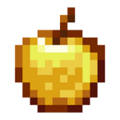
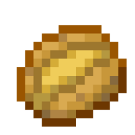
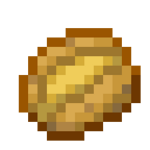

Usaremos uma tabela para mostrar alguns alimentos do Minecraft, informaremos os ingredientes e quanto de fome ele irá restaurar após serem comidos.
Alimentos do Minecraft
|
Principais Receitas do Minecraft
|
|
Comidas
|
Ingredientes
|
Nivel Fome
|
| Pão |
3 Trigos |
Restaura 2.5 Barras de Fome |
| Maçã Dourada |
1 Maçã e 8 Barras de Ouro |
Restaura 2 Barras de Fome |
| Ensopado de Congumelos |
1 Congumelo Vermelho, 1 Congumelo Marrom e uma Tijela |
Restaura 3 Barras de Fome |
| Batata Assada |
Batata |
Restaura 2.5 Barras de Fome |
| Bolo |
3 Baldes de Leite, 3 Trigos, 1 Ovo e 2 Açúcar |
Restaura 7 Barras de Fome |
| Biscoito |
2 Trigos e 1 Semente de Cacau |
Restaura 1 Barras de Fome |
| Frango Assado |
1 Frango Cru |
Restaura 1.5 Barras de Fome |
| Salmão Assado |
1 Salmão Cru |
Restaura 3 Barras de Fome |
Colocamos alguns alimentos do jogo, mostrando quais são os ingredientes necessários para faze-los e quanto de fome eles restauram após serem comidos, alguns desses alimentos são adquiridos por
"crafting" e não na fornalha, senso eles:
Pão,
Maçã Dourada,
Ensopado de cogumelos,
Bolo e
Biscoito. Então atente-se enquanto joga.

 

Lista de Todas as Comidas do Minecraft
- Maçã Dourada Encantada
- Maçã Dourada
- Cenoura Dourada
- Carneiro Assado
- Costela de Porco Assada
- Salmão Assado
- Filé
- Ensopado de Beterraba
- Beterraba
- Pão
- Cenoura
- Frango Assado
- Bacalhau Assado
- Coelho Assado
- Ensopado de Congumelos
- Ensopado de Coelho
- Ensopado Suspeito
- Maçã
- Fruta do Coro
- Algas Secas
- Fatia de Melancia
- Batata Venenosa
- Torta de Abóbora
- Bife Cru
- Frango Cru
- Carneiro Cru
- Costela de Porco Crua
- Coelho Cru
- Bolo
- Biscoito
- Frasco de Mel
- Baiacu
- Bacalhau Cru
- Salmão Cru
- Carne Podre
- Olho de Aranha
- Bagas Doces
- Peixe Tropical